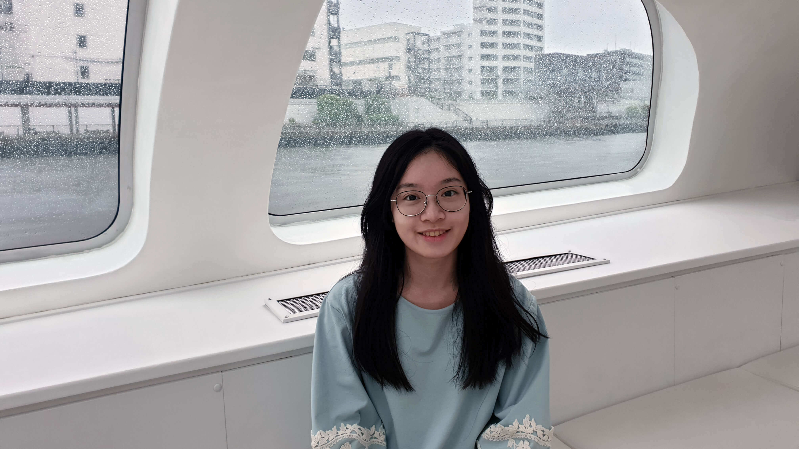

關於我
｜Who I am｜
我是吳佩芸，喜歡閱讀、旅遊和攝影。走出生活圈，探索未知的地方，對於一切有美感的事物，總想盡可能的記錄下來，除了是興趣，也能讓我得到設計靈感和啟發。
我是一個樂觀且有挑戰精神的人。我相信「挫折是前進的動力」，面對挫折時，認真審視錯誤，做出改善，就能更穩的向前邁進。在團隊合作方面，我對任何事物都是絕對細心盡責，和成員也能合作無間，並勇於承擔重大責任。
以使用者為中心的設計旨在通過設計讓人們的生活更輕鬆。我想成為致力於對人們看待世界的方式產生影響力的公司的一份子。我相信我的設計經驗、軟體技能以及對使用者研究的興趣相結合，能讓我在團隊中發揮所長。

畢業學校國立交通大學傳播與科技學系
經歷
奇美博物館設計實習生（2018年）
交大傳科系實習展主視覺設計師（2018年）
被遺忘的樂園遊戲工程 & 網頁工程（2018年 - 2019年）
交大產學服務網UI / UX設計師（2018年 - 2020年）
技能
設計相關：Illustrator、Photoshop、Adobe XD、Premiere
網頁語法：HTML、CSS、JavaScript、jQuery
英語能力
GEPT 中高級通過、TOEIC 860分
獎項
台灣教育傳播暨科技學會年會@NCTU國際學術研討會數位媒體競賽第二名（2019年）